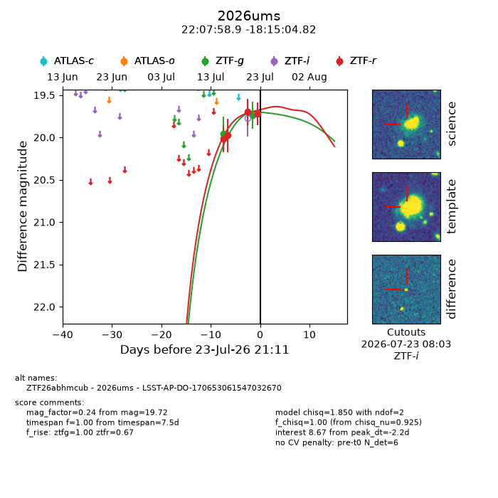
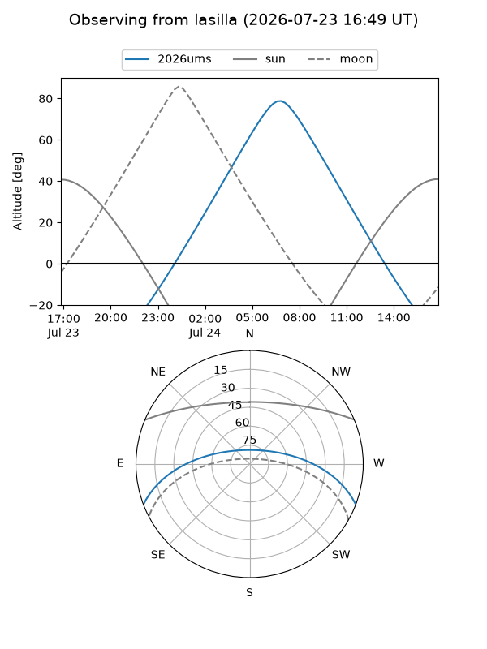
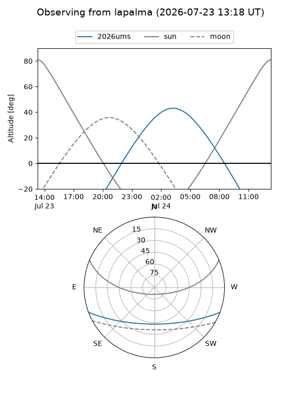
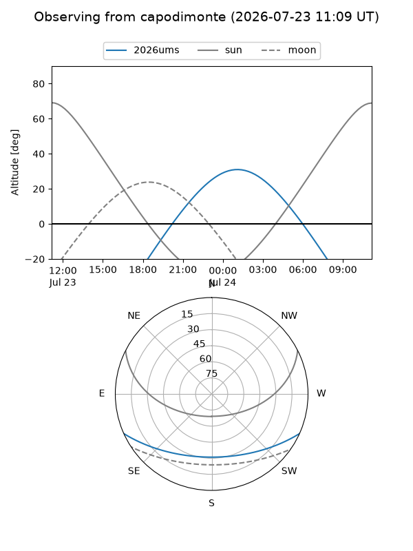
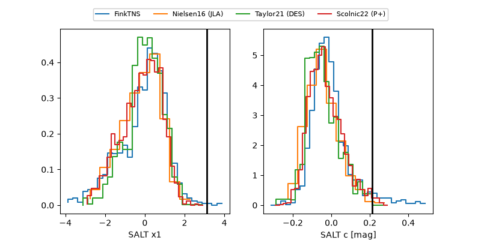

2026ums
Target 2026ums at 2026-07-23 21:14
Aliases and brokers:
FINK-ZTF: ztf.fink-portal.org/ZTF26abhmcub
Lasair-ZTF: lasair-ztf.lsst.ac.uk/objects/ZTF26abhmcub
ALeRCE-ZTF: alerce.online/object/ZTF26abhmcub
YSE-PZ: ziggy.ucolick.org/yse/transient_detail/2026ums
TNS name: wis-tns.org/object/2026ums
Direct TNS query: direct search
alt names
ZTF26abhmcub (ztf,fink_ztf)
2026ums (tns,yse)
LSST-AP-DO-170653061547032670 (iau_lsst)
Coordinates:
equatorial (ra, dec) = 331.9955,-18.25134
equatorial (HMS+DMS) = 22:07:58.92,-18:15:04.82
galactic (l, b) = (37.4194,-51.44533)
Flags:
TNS type: nan
peak dt: -2.2
Photometry:
last ztfg=19.74, ztfr=19.72
2 ztfg, 4 ztfr detections
Lightcurve

Visibility



Additional plots
